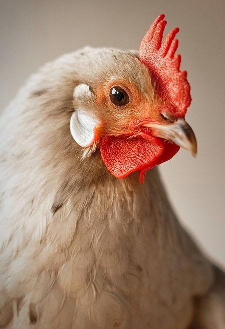

Observe behavior
Build a clearer picture of everyday movement and activity patterns within a flock.
Smarter flock monitoring
PoultryVision is a chicken behavior scanning project built to help farmers notice unusual changes in activity and behavior, so they can make more informed decisions about flock care.
Log in to unlock the scanner workspace.
This project is still in development. It is intended to support observation, not replace advice from a qualified veterinarian.

Why PoultryVision
The website introduces a future scanning tool intended to make observation more organized. These are project goals, not features that are already available in a finished scanner.
Build a clearer picture of everyday movement and activity patterns within a flock.
Help bring attention to behavior that may deserve a closer look instead of relying on memory alone.
Give farmers another source of information when deciding whether to inspect a bird or ask a veterinarian for advice.
The planned workflow
The final workflow will depend on how the scanning system is built. This is the intended direction for the project.
Collect a suitable image or video sample of chicken activity using the planned scanner.
Analyze selected behavior patterns and flag observations that may warrant attention.
Use the information alongside regular flock checks and veterinary guidance when needed.
Members access
Log in or create a free account to use the video workspace. Access stays locked until you sign in.
Log in to unlock the scanner workspace.
PoultryVision / WORKSPACE
Upload a short clip to explore the PoultryVision review workflow.
Prototype modeINPUT
Your clip stays in your private storage folder until you delete it. You must delete it before uploading another video.